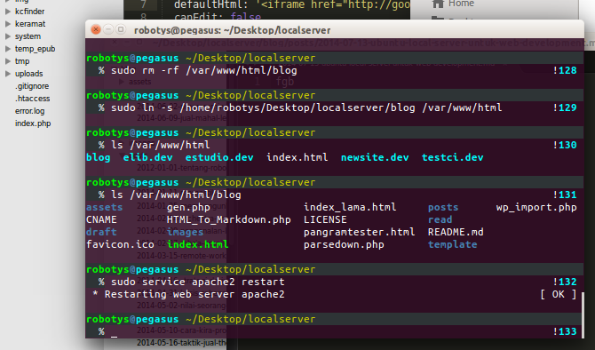
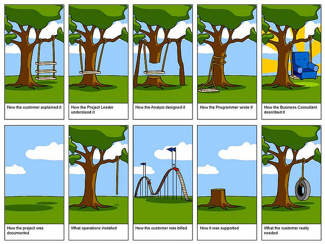

Ya, ini adalah tutorial ringkas (lebih kepada nota untuk diri sendiri) tentang langkah-langkah yang perlu diambil ke atas sebuah komputer dengan OS Ubuntu untuk memudahkan proses pembangunan laman web.

Mengapa Ubuntu? Kerana ianya linux dan kebanyakan server online adalah linux dengan flavor Ubuntu. Semakin dekat spesifikasi development server dengan production server semakin bagus kerana semakin kurang bugs yang akan muncul.
Langkah awal sebelum mula adalah: Install Ubuntu Desktop (terbaru adalah 14.04 LTS semasa artikel ini ditulis) dan ikut banyak tutorial yang ada di online untuk install Apache2 MySQL dan juga PHP. Ia cukup mudah.
Pastikan semua telah diinstall dengan baik dengan cara buka laman web http://localhost di browser kita.
Apabila kita ingin menghasilkan projek baru, kita perlu menyediakan tapak coding untuk projek website tersebut.
Berikut adalah langkah-langkahnya:
1) Buat Folder baru di Desktop
Saya suka biarkan koding untuk semua projek saya dalam satu folder khas di Desktop. Ini memudahkan saya mencapai kod tersebut dan mudah untuk kita gunakan dan ejas assets yang diperlukan.
Buka Terminal dan run kod berikut:
$ mkdir ~/Desktop/localhost/blog
Semak dan pastikan folder tersebut telah muncul di desktop.
2) Buat shortcut ke folder di desktop tadi di dalam folder /var/www/html
Ini adalah kod yang spesifik. Kita mahu shortcut ke folder blog di dalam folder html. Bukan sebaliknya. Jika sebaliknya nanti kita tidak boleh edit kod projek kita kerana ianya milik root (semua fail dalam folder html adalah milik root/apache).
Run kod berikut:
$ ln -s ~/Desktop/localhost/blog /var/www/html
Semak untuk pastikan shortcut telah dibina dengan lihat senarai isi dalam folder html:
$ ls /var/www/html
3) Setup VirtualHost Config untuk Apache
VirtualHost adalah ibarat dalam satu server Apache kita boleh run banyak projek website bawah setting masing-masing. Antara setting yang penting dalam config adalah servername, documentroot dan juga allow access.
Jika ini adalah fresh install, kita perlu sediakan satu template config terlebih dahulu.
Bina satu fail text seperti berikut:
$ touch /etc/apache2/sites-available/template.conf
Kemudian kita edit fail tersebut dengan menggunakan aplikasi gedit dengan permission sebagai root:
$ gksudo gedit /etc/apache2/sites-available/template.conf
Aplikasi dengan rupa ala-ala notepad akan muncul. Copy dan paste teks berikut:
<VirtualHost *:80>
ServerName **template.dev**
ServerAdmin webmaster@localhost
DocumentRoot /var/www/html/**template**
ErrorLog ${APACHE_LOG_DIR}/error.log
CustomLog ${APACHE_LOG_DIR}/access.combined log
<Directory /var/www/html/**template/**>
AllowOverride All
Order allow,deny
allow from all
</Directory>
</VirtualHost>
Baik, save fail tersebut (ctrl+S) dan tutup aplikasi gedit tadi.
Setelah ada template barulah kita boleh duplicate untuk projek website blog kita tadi:
$ sudo cp /etc/apache2/sites-available/template.conf /etc/apache2/sites-available/blog.conf
Perkara yang paling penting di sini adalah pastikan setiap fail config kita menggunakan filetype: .conf . Jika tidak apache tidak akan kenal dan website kita tidak boleh diakses.
4) Edit Config mengikut Projek Kita
Setiap projek ada perbezaan. Paling biasa adalah segala kod bagi satu-satu projek biasanya diletak dalam satu folder. Maka kita perlu pastikan apache jumpa kod yang betul apabila domain namenya dipanggil.
Untuk berbuat demikian, kita perlu edit config setting tadi.
Buka fail config menggunakan gedit:
$ gksudo gedit /etc/apache2/sites-available/blog.conf
Dan ubahsuai mengikut nota seperti berikut:
<VirtualHost *:80>
# ServerName adalah domainname yang kita mahu guna untuk access daripada browser. Saya mahu guna http://blog.dev
ServerName **blog.dev**
ServerAdmin webmaster@localhost
# DocumentRoot adalah folder dimana letaknya kod-kod untuk projek kita. Saya letak dalam folder blog:
DocumentRoot /var/www/html/**blog**
ErrorLog ${APACHE_LOG_DIR}/error.log
CustomLog ${APACHE_LOG_DIR}/access.combined log
# Ini adalah setting untuk access dan juga htaccess. Tukar kepada folder projek kita. Pastikan hujungnya ada slash '/'
<Directory /var/www/html/**blog/**>
AllowOverride All
Order allow,deny
allow from all
</Directory>
</VirtualHost>
Setelah siap ubahsuai kita save (ctrl+s) dan tutup gedit.
5) Enable site untuk diakses
Kita perlu activate config tadi supaya Apache boleh mengesannya secara live di locaserver. Run command berikut:
$ sudo a2ensite blog.conf
6) Edit Host File untuk Locaserver
Kemudian kita perlu mengubahsuai hosts file untuk memastikan komputer kita memanggil server Apache dalam komputer kita apabila kita melayari http://blog.dev
Buka fail hosts dengan gedit:
$ gksudo gedit /etc/hosts
Dan tambah kod ini di barisan baru:
127.0.0.1 blog.dev
Save dan tutup gedit.
7) Restart Apache
Apabila semua sudah siap, kita perlu restart/reload servis apache untuk membolehkan apache menggunakan config projek kita yang terbaru.
$ sudo service apache2 restart
Dan kini, apabila kita pergi ke http://blog.dev di browser kita, kita dapat lihat segala kod php kita berjalan dengan lancar.
Boleh cuba buat fail baru dalam folder projek kita untuk memastikannya:
- Pergi ke dalam folder blog di desktop.
- klik kanan dan pilih menu 'New Document'
- letak nama dail tersebut 'info.php'
- Masukkan kod berikut dalam fail tadi:
<?php phpinfo();?>
- Save dan reload page http://blog.dev di browser.
Jika ia menjadi maka paparan maklumat PHP akan muncul dengan lengkap.
Harapnya ia menjadilah. Jika tidak kita perlu troubleshoot atau ulang semula langkah-langkah di atas. TT___TT
Hari ini (3 Jun 2014) saya dijemput sebagai penceramah jemputan di Jabatan Perdana Menteri untuk berkongsi tentang penulisan portal.
Saya berkongsi khusus tentang cara yang mudah untuk membantu kita menulis setiap hari. Antara strategi yang kita boleh gunakan adalah:
1) Menulis Rangka Dahulu
Ini adalah formula asas. Sama sahaja seperti yang diajarkan semasa SPM. Rangka artikel tidak perlu extra vaganza dan kelihatan hebat.
Rangka artikel sepatutnya mudah. Ia adalah apa semua isi penting untuk ditulis.
Bagi Karya cerpen kita boleh senaraikan kronologi cerita cerpen kita.
Fasa ini adalah fasa brainstorming. Bukan fasa mengubahsuai untuk cantik.
Terus tulis isi-isi yang berkaitan. Jika sudah ditulis dan rasa isi tersebut tidak berguna, biarkan sahaja. Jangan dipadam.
2) Menulis tanpa meng-edit
Kita telah dipupuk dari matapelajaran Bahasa Melayu semasa SPM untuk meng0edit semasa mengarang.
Ini adalah amalan yang SALAH.
Jangan meng-edit semasa mengarang. Ia akan memutuskan 'flow' yang penting semasa menulis.
Abaikan typo, grammar, bahasa rojak dan sebagainya semasa menulis draft. Jangan peduli dengan kata-kata rakan yang terlihat tulisan kita semasa draf ini.
Sudah nama pun draf, penulian ini akan diubahsuai menjadi cantik.
Fokus kepada meluahkan segala yang terpendam (untuk karya cerpen) atau melengkapkan isi artikel dengan penerangan yang bagus.
3) Tulis dalam gaya bahasa percakapan
Jika artikel yang ditulis bukan untuk penerbitan akademik, berita ataupun apa-apa penerbitan yang formal, maka tulis sahaja draf tersebut sepertimana kita bercakap dengan orang lain.
Jika kita penulis baru, mungkin sukar untuk berbuat demikian kerana belum pernah mencuba dan masih tiada momentum.
Boleh gunakan teknik yang pernah saya guna satu ketika dahulu iaitu merakam bebelan sendiri menggunakan perakam suara (atau smartfon) tentang tajuk dan isi yang ingin ditulis.
Setelah siap rakam, ulang dengar dan tulis semula.
Teknik ini sangat bagus kerana penulisan kita dengan sendirinya menjadi mudah difahami oleh pembaca. Ini kerana pembaca berasa seperti sedang bercakap dengan penulis.
Ia juga bagus kerana teknik ini akan memberi 'suara' yang unik kepada artikel kita. Lain orang lain 'suara'-nya, dan dengan teknik ini suara kita akan ada dalam artikel kita dengan sendirinya.
4) Jangan berhenti
Perkara utama yang perlu fokus semasa menulis draf adalah JANGAN BERHENTI.
Buat apa sahaja untuk pastikan kita tidak berhenti semasa menulis.
Momentum yang hilang semasa menulis amat sukar untuk didapatkan semula. Dan apabila ia sudah hilang, kita perlu berusahan untuk kembali kepada penulisan.
Antara tips yang boleh diamalkan adalah menulis ketika tengah malam atau awal pagi. Ini kerana waktu tersebut sangat kurang gangguan daripada persekitaran.
Kita dapat fokus kepada penulisan tanpa gangguan-gangguan tersebut.
5) Berhenti setelah siap semua point
Ya, berhenti hanya setelah kita sentuh semua isi yang kita senaraikan semasa fasa merangka artikel.
Jika kita tulis cerpen, hanya berhenti setelah kita siap kembangkan semua kronologi cerita.
6) Peram
Setelah berhenti, terus save dan simpan.
JANGAN sentuh atau edit. Biarkan ia terperam dalam harddisk buat satu masa.
Jangka masa yang bagus adalah 3 hari, namun 1 hari sudah memadai.
Yang penting pada fasa ini adalah LUPAKAN artikel yang kita telah tulis tadi. Kita boleh fokus kepada kerja/tidur atau sembahyang subuh pula.
7) Edit untuk terbit
Setelah sehari atau lebih kita peram artikel tadi, baru kita buka semula untuk edit.
Pada masa ini, kita akan dapat lihat dengan jelas kecacatan dan kekurangan artikel kita.
Biasanya ia berkisar kepada 3 perkara utama iaitu: 1) Isi berterabur 2) Tajuk tidak menarik 3) Typo dan grammar
Edit artikel kita tadi sehingga kita puas hati. Setelah itu barulah kita boleh hantar kepada editor untuk tambah baik dari sudut pandang orang ketiga pula.
Atau jika hanya menulis untuk blog sendiri, kita boleh sahaja terus terbit untuk pembaca di blog kita!
Itulah perkara yang saya sendiri amalkan untuk menulis setiap hari (atau semasa banyak idea. :))
Wordpress themes telah banyak membantu pengguna wordpress dan juga ramai peniaga yang memerlukan cara mudah, pantas dan murah untuk memiliki alamn web sendiri. Samada melalui freelancer ataupun marketplace yang banyak ada di pasaran, tidak dapat disangkal bahawa jasa Wordpress Themes sangat besar kepada pengguna internet.
Namun dengan lambakan themes wordpress di pasaran, terdapat lebih banyak themes yang tidak bagus berbanding yang bagus.
Prestasi themes wordpress perlu dilihat dari dua sudutu iaitu:
- Sudut pengguna themes yang mahukan themes tersebut mempunyai banyak fungsi dan mudah digunakan
- Sudut web developer yang mahukan themes tersebut mudah diubahsuai kodnya dan tidak menjadi punca sakit kepala.
Benarkah sakit kepala? Ya, boleh google dan baca banyak perkara tentang "Bad Wordpress Themes".
Jadi, sebagai peringatan kepada diri saya pada masa hadapan, berikut adalah perkara-perkara yang perlu diambil kira jika kau perlu membina themes wordpress:
1) Gunakan Themes Framework
Themes framework adalah kumpulan kod yang menyediakan banyak fungsi yang diperlukan oleh themes seperti shortcodes dan juga themes options.
Gunakan Hybrid Core atau Redux buat masa sekarang sehinggalah Themeforest mengeluar Theme Framework mereka kelak.
2) Kod untuk Desain pada Themes, kod untuk Fungsi pada Plugin
Ya, gunakan konsep MVC sebaik mungkin walaupun ia mungkin tidak disokong secara native oleh Wordpress. Ini penting untuk memudahkan kita ubahsuai kod pada masa hadapan
3) Gunakan Plugin khas untuk Dependencies
Gunakan plugin TGM Plugin Activation untuk menguruskan plugin-plugin yang diperlukan oleh themes supaya turut sama diiinstall semasa themes activation. Dengan ini pembangunan Themes tidak perlu lagi pening kepala memikirkan untuk ditambah kod plugin yang diperlukan.
4) Design Yang tercantik dan paling Fleksibel
Pengguna wordpress rata-rata mahukan ciri-ciri berikut untuk desain wordpress mereka tidak kira harga mahupun siapa penulis themes tersebut:
- Desain yang cantik, kemas dan unik
- Desain yang fleksibel (themes options)
- Themes yang bersih daripada bug
- Themes yang tidak mengganggu plugin sedia ada
- Setting yang boleh digunakan pada themes lain
- Support yang mantap!
Itulah 4 perkara penting yang harus diambil kira jika mahu menghasilkan wordpress themes yang digunakan oleh ramai orang dan dikagumi oleh ramai web developer!
Suka saya mengulas ayat ini secara longgar yang ditulis oleh rakan seperjuangan di rumbia.my:
Kita freelancer, seorang professional dan bukannya buruh digital.
Jika anda baca lebih lanjut, apa yang disarankan oleh artikel tersebut adalah sebagai freelancer kita perlu ingat bahawa separuh daripada kerja kita adalah kerja produksi dan kerja teknikal. Manakala separuh lagi yang selalu dilupakan adalah kerja-kerja bisnes dan marketing.
Namun apa yang ingin saya ulas adalah ayat yang sangat catchy di atas.
Ya, sebagai seorang freelancer dalam bidang web developer, itu adalah perasaan kita pada banyak masa dan ketika. Freelancer dilayan seperti seorang buruh sahaja. Freelancer dianggap sebagai pekerja yang hanya menurut perintah klien seperti bos.
Paling sakit hati apabila freelancer buat seperti mana arahan klien tetapi hasilnya tidak klien suka dan klien tersebut salahkan freelancer dan tidak mahu melunaskan bayaran lanjut.
Memang sakit hati dan sebagai freelancer, perkara ini pasti akan kita rasa.
Pasti.
(Yang lebih sakit hati bila kita amat memerlukan bayaran tersebut untuk kegunaan terdekat.)
Pada masa itu freelancer akan terngiang-ngiang ayat di atas tadi dan akan mula terfikir di manakah silapnya hingga perkara ini terjadi.
Saya sudah berfikir dan masak tentang perkara ini. Maka inilah hasilnya:
Ada Dua Jenis Klien: Bos dan Klien

Setiap klien kita biasanya termaktub dalam 2 kategori utama iaitu kategori Klien atau kategori Bos.
Apakah maksud kategori Klien? Klien adalah orang yang mengupah 'Nasihat dan Akal Fikiran' kita. Klien jenis ini faham bahawa pengetahuan freelancer lebih luas dan kepakaran freelancer lebih tinggi berbanding diri beliau. Klien jenis ini juga amat menghormati fakta tersebut.
Hasilnya klien akan lebih terbuka dan menghormati hasil kerja freelancer.
Klien kategori Bos pula adalah klien yang mengupah freelancer untuk merealisasikan idea beliau. Beliau sudah ada idea dan aka fikiran mereka untuk menyelesaikan masalah mereka. Apa yang mereka perlukan hanyalah 'code monkey' yang patuh arahan mereka.
Klien kategori Bos inilah yang banyak buat perangai kepada freelancer.
Cara mengatasi faktor ini adalah kita hanya memilih untuk bekerja dengan klien yang rasional sahaja. Manakala jika kita terpaksa bekerja dengan Bos, kita perlu letakkan siap-siap apakah perkara dan limitasi hubungan perniagaan ini.
Anggap klien seperti rakan, anggap Bos seperti pelanggan. Itu cara yang paling sesuai.
Ada dua jenis Freelancer: Profesional dan Buruh Digital

Ya, freelancer juga menyumbang kepada fenomena ini. Jika kita lihat pasaran freelancer, kita dapat melihat dengan jelas ada 2 kelas freelancer iaitu kelas Profesional dan juga kedua kelas Buruh Digital.
Bukan bermakna satu lebih bagus daripada yang lain. Ia cuma kategori sahaja.
Profesional biasanya sudah lama berkecimpung dalam bidang teknikal tersebut dan sudah masak dengan segala macam ragam dan bug yang ada dalam bidang tersebut. Nasihat dan pandangan profesional amat berguna. Kerja dengan profesional lebih cepat siap dan hasilnya lebih berkualiti.
Buruh digital pula biasanya adalah mereka yang baru berkecimpung dalam bidang teknikal tersebut. Mereka hanya mampu mengikut arahan dan tiada pengalaman yang cukup untuk memberi pandangan yang bernas. Kerja mungkin cepat siap tetapi kualiti kerja tidak sama dengan profesional.
Penyelasaian
Daripada 2 faktor di atas, kita boleh nampak bahawa masalah utama kita adalah mismatch of manpower.
Klien yang sepatutnya bekerja dengan profesional tetapi bekerja dengan dengan Buruh Digital.
Bos yang sepatutnya bekerja dengan Buruh Digital tetapi bekerja dengan profsesional.
Maka haruslah akan berlaku kekecewaan dan selisih faham antara kedua-dua pihak.
Penyelasaiannya adalah ganda dua:
-
Pihak freelancer harus sedar mereka freelancer kategori mana, profesional atau buruh digital.
- Pihak freelancer harus proaktif dalam memilih klien mereka mengikut kategori freelancer.
Jangan harapkan klien untuk membuat pilihan. Biarkan kuasa memilih itu ditangan kita sebagai freelancer agar kita lebih tenang dan tidak tertekan dikemudian hari.
Projek seterusnya adalah jual themes wordpress. Ini untuk offset kerja active income (freelance) kepada passive income (royalty). Jadi secara teori, apabila projek ini berjaya, kita akan ada lebih banyak masa untuk perkara lain.
Berikut adalah benchmark dan rasionalnya:
- Themes diterima di Wordpress.org. Wordpress.org lebih susah untuk diluluskan berbanding ThemeForest. Jadi secara teorinya, jika kita lepas di Wordpress.org maka mudah untuk kita lepas di ThemeForest.
- Themes berjaya didownload di Wordpress.org
- Themes diterima di Themeforest
- Jualan pertama di ThemeForest
- Payout pertama dari ThemeForest
- USD1000 pertama dari ThemeForest. Ini benchmark "Sudah hampir" kepada sasaran akhir:
- USD2000 pertama dari ThemeForest. Ini benchmark "First Touch" kepada sasaran akhir
- Maintain USD2000 sebulan dari ThemeForest. Ini sasaran yang kita mahukan. Jika boleh cecah maka sudah tidak perlu lagi fokus pada kerja-kerja freelance.
Untuk mencapai perkara di atas, ada beberapa perkara yang perlu diambli kira. Antara perkara tersebut adalah:
- Perlu pisahkan antara Desain (Themes) dan Fungsi (Plugins). Yang kita mahu jual adalah Themes. Jika perlukan fungsi tertentu kita perlu gunakan Plugins
- Desain perlu semantap mungkin
- Guna Redux sebagai Themes Framework. Ini akan memisahkan setting blog daripada Themes
Kita perlukan kelebihan untuk memudahkan kita mencapai sasaran. Antara kelebihan desainer lain adalah desain yang awesome, sangat fleksibel dan juga jumlah features yang sungguh banyak.
Saya lihat, kelebihan utama yang akan memberi ruang yang luas kepada kita adalah short turn over of a design. Masa untuk hasilkan desain baru yang sangat pantas.
Kita boleh mencapai perkara ini jika kita bukan BINA themes, tetapi CONFIGURE themes.
Bayangkan jika kita boleh menukar setting layout warna dan sebagainya dengan mudah. Ambil kita contoh Word document dan Master Styles. Apabila Master style bertukar, maka seluruh desain Word document tadi juga akan bertukar.
Jika kita boleh hasilkan framework sebegitu, maka pasti sangat mudah untuk kita hasilkan banyak themes dalam masa yang sangat pantas.
Untuk itu, kita perlu fikir dengan lebih lanjut tentang Data Structure dan juga Application Layer untuk memproses themes tadi.
Sasaran yang mahu dituju: kita boleh randomize setting tersebut dan akan terhasil desain yang lain. Kita juga boleh track setting apa yang paling popular untuk setiap field dan kita boleh gabungkan kesemuanya untuk menghasilkan desain baru.
Dengan itu, sangat mudah kita desain themes baru setiap minggu!
Kita juga hanya perlu pastikan 7 perkara penting tentang desain untuk menghasilkan themes yang kemas dan kelihatan cantik.
Sebagai seorang pekerja mahir, kita tidak akan terlepas daripada diminta untuk kerja-kerja freelance/sambilan. Jika anda seorang designer full time, pasti ada yang berminat untuk desain anda secara freelance.
Bahasa mudahnya freelance ini seperti 'mengambil upah' menghasilkan kerja bagi pihak klien.
Sebelum anda yang bekerja full time mahu mengambil kerja sambilan, pastikan majikan anda membenarkan anda membuat kerja sambilan. Kebanyakan majikan ada terma dan syarat berkaitan kerja sambilan ini.
Salah satu perkara yang agak pening untuk mereka yang baru mula freelance adalah tentang meletakkan bayaran. Bagaimanakah cara bayaran dilakukan dan berapakah jumlah bayaran yang sesuai.
Cara Bayaran
Cara bayaran bagi projek freelance terbahagi kepada tiga iaitu:
- Kadar Tetap untuk Projek
- Kadar langsung dengan Masa yang diperlukan
- Hybrid 1 dan 2.
Kadar Tetap
Kadar tetap adalah apabila kita tetapkan daripada awal projek bahawa kerja tersebut bayarannya adalah sekian-sekian. Tidak kira apa yang berlaku, selagi skop kerja tidak berubah maka kadar bayarannya tidak berubah.
Namun antara cabaran bayaran dengan kadar tetap ini adalah klien kerap menangguhkan kerja dan lambat menghantar bahan yang diperlukan menjadikan dateline kerja teranjak ke hadapan. Ini menjadi masalah besar apabila kerja yang dianjak kehadapan itu sekarang bertindih dengan kerja lain yang sudah dijadualkan pada tarikh yang sama.
Masalah lain adalah apabila dateline dianjak kehadapan maka bayaran untuk kerja tersebut juga dianjak kehadapan. Ini membuatkan jadual bayaran komitmen kita juga semakin kelam kabut.
Cara mengatasi perkara ini ada dua iaitu: 1) Bayar mengikut tahap kerja dan 2) Dateline berasaskan jangka masa, bukan tarikh.
Contoh 1 adalah: bayaran untuk projek website adalah mengikut tahap kerja iaitu tahap 1 - deposit 10%, tahap 2- fasa mockup dan final draft 30%, 3- fasa testing 30% dan tahap 4- fasa deploy dan handover 30%.
Contoh dateline berasaskan jangka masa adalah: 1- mula kerja mockup (selepas terima deposit) 2- final draft (2 minggu selepas terima deposit) 3- Testing (4 minggu selepas final draft) 4- Handover (2 minggu selepas testing)
Ia agak kompleks, maka ubahsuai mengikut kemampuan klien dan jumlah bayaran projek tersebut.
Bayaran Kadar langsung dengan Masa
Cara lain untuk mengatasi complexity cara di atas adalah dengan menggunakan cara bayaran kedua iaitu Kadar Langsung Dengan Masa.
Cara bayaran ini lebih mudah. Kita tetapkan berapakah upah bagi setiap jam kerja dilakukan. Contohnya RM300 per jam sehingga siap.
Maka klien hanya akan bayar bagi setiap masa yang kita luangkan untuk projek tersebut.
Tidak kira berapa banyak perubahan dan apapun yang dimahukan, upah tetap mengikut kadar yang telah ditetapkan.
Cabaran bagi cara ini adalah konflik antara klien dan freelancer. Klien mahukan masa yang rendah untuk upah yang murah manakala freelancer mahukan masa yang lebih lama untuk upah yang lebih tinggi. Klien akan berasa was-was dengan freelancer kerana takut freelancer mengambil kesempatan dengan sengaja membuat kerja dengan perlahan.
Ini adalah cabaran yang sangat biasa berlaku. Cara mengatasinya adalah mudah sebenarnya. Apabila kerja yang kita lakukan semakin cepat siap, maka kita harus meningkatkan kadar bayaran perjam kita.
Contohnya, sebelum ini kerja desain web site mengambil masa 2 minggu untuk siap dan kita meletakkan kadar bayaran RM500 sehari. Tetapi sekarang kerja yang sama kita mampu siapkan dalam masa seminggu sahaja. Apa yang kita boleh lakukan adalah meningkatkan kadar bayaran kepada RM800 sehari. Ya mungkin jumlah keseluruhan lebih rendah (RM5600 VS RM7000) tetapi harus kita ingat bahawa RM5600 itu untuk seminggu manakalau RM7000 itu untuk 2 minggu.
Jika kita guna kadar terbaru untuk 2 minggu tentulah ianya lebih banyak daripada RM7000 (RM11,200 sebenarnya).
Hybrid
Ada juga cara bayaran yang menggabungkan kedua-dua elemen ini dalam pelbagai cara.
Pertama adalah menetapkan kadar mengikut projek dan masa yang diperlukan diikuti dengan kadar perjam selepas masa tersebut tamat. Contohnya RM10000 yang siap dalam masa 2 bulan dan bayaran RM300 perhari selepas tamat masa tersebut.
Cara ini adalah untuk menyelamatkan pihak freelancer daripada menanggung kerugian jika projek tersasar daripada dateline.
Cara kedua yang juga popular adalah menetapkan kadar perjam dan mewajibkan klien membayar deposit sebelum memulakan kerja. Ia ibarat topup prepaid. Contohnya projek dijangka siap dalam masa 2 minggu (10 hari) dengan kadar bayaran RM500 sehari. Jumlah keseluruhan adalah RM5000 manakala deposit yang diminta adalah RM1500 untuk kerja minimum 3 hari pertama. Bayaran harus dimasukkan setiap hari khamis sebagai contoh.
Mengira Jumlah Bayaran Yang Sesuai
Cara mengira jumlah bayaran adalah mudah jika anda baru bermula dan ada kerja tetap. Kita gunakan gaji daripada kerja tetap tadi untuk menentukan kadar per jam kita.
Contohnya gaji bulanan adalah RM2000 sebagai junior web developer. Maka gaji perjam boleh dikira menggunakan cara berikut:
RM 2000 / (20 hari bekerja x 9 jam sehari) = RM 11/jam
(ya, itulah kadar perjam sebagai penduduk kelas miskin bandar)
atau kiraan perhari:
RM 2000 / 20 hari bekerja dalam sebulan = RM 100 sehari
Itu adalah kadar bayaran permasa. Maak untuk setiap projek, anggarkan kadar masa yang diperlukan. Contohnya 1 bulan. Gunakan cara berikut untuk mendapatkan jumlah bayaran yang sesuai:
1 bulan x 2 x 30 hari x RM 100 perhari = RM 6000
Mengapa 1 bulan x 2 ? Kerana kerja sambilan memerlukan masa sambilan dirumah. Masa sambilan kita dirumah biasanya adalah 4 jam sehari mengikut pengalaman saya. Maka 1 bulan projek full time kita bersamaan dengan dua kali ganda iaitu 2 bulan untuk projek sambilan tersebut.
Maka itulah cara kira perkara-perkara penting untuk setiap projek sambilan kita iaitu:
- Jangka masa siap (berapa hari/bulan)
- Kos yang diperlukan (berapa ringgit)
Setelah 3 tahun bertukar arah menjadi pekerja sepenuh masa (sebelum ini saya freelancer sepenuh masa) maka tibalah masa untuk merenung kembali apakah yang telah dipelajari selama ini dan apakah pula langkah untuk masa mendatang.
Pelajaran 1: Stabiliti penting untuk minda tenang
Perkara yang paling sakit semasa freelance dahulu adalah income yang tidak menentu. Mungkin kerana masih terlalu baru dalam freelancing digabung dengan perangai yang 'malu untuk meminta bayaran' maka pengalaman freelancing saya sangat tidak seronok.
Setelah bekerja sepenuh masa, ternyata stabiliti yang kelihatan ringkas pada mata kasar adalah sangat bernilai. Ia membawa ketenangan yang luar biasa bagi saya. Rutin gaji masuk setiap bulan memudahkan kita membuat perancangan pada masa hadapan.
Yang paling suka apabila kita ada pendapatan tetap setiap bulan adalah bank terutamanya bahagian pinjaman dan kad kredit. Maka perlu juga belajar 'say no' untuk menghindari hutang yang tidak diperlukan.
Pelajaran 2: Kebanyakan Buku Kewangan adalah untuk Pekerja Makan Gaji
Ya, kebanyakan buku kewangan yang saya baca suatu ketika dahulu kini 'make sense'. Semasa freelancing, kebanyakan tips dan nasihat yang diberikan nampak seperti tidak berpijak didunia nyata. Rupa-rupanya dunia buku kewangan tersebut memang tidak serupa dengan dunia kehidupan saya ketika itu.
Kini, nasihat untuk 'bayar diri sendiri dahulu' sebelum membayar orang lain adalah satu nasihat yang sangat berguna (walaupun masih ada lompong amalan menyimpan saya, namun ia sudah memberi kesan yang positif)
Pelajaran 3: Freelancing sambil Makan Gaji terlalu memenatkan
Sehingga sekarang masih ada kerja freelancing yang sedang diusahakan. Kebanyakannya adalah daripada klien yang sudah bertukar tahap kepada rakan. Walapun tidak serancak dahulu, namun beban kerja terasa tiga kali ganda. Sungguh penat.
Bertambah penat apabila masa untuk menghasilkan kerja freelance perlu ditolak daripada masa bersama keluarga atau masa berehat daripada kerja di pejabat. Ini bukanlah formula hidup yang bagus
Pelajaran 4: Kadar Freelance sambil Makan Gaji meningkat mendadak
Penat bekerja haruslah berbaloi. Maka amatlah berbaloi untuk penat apabila kadar freelance anda kini adalah tiga kali ganda berbanding semasa freelance full time.
Mengapa begitu? Kerana kini kita boleh 'say no' kepada mana-mana projek yang tidak menarik tanpa perlu rasa takut dengan pendapatan bulan hadapan yang tidak menentu.
Kerana itu jugalah kita boleh memilih klien yang mudah untuk kita uruskan dan terbukti bagus dalam membayar projek mengikut masa yang ditetapkan
Pelajaran 5: Makan Angin di Luar Negara Membuka Minda
3 tahun kebelakangan ini semakin berani menjejakkan kaki ke luar negara (terima kasih kepada makwe cun yang memperkenalkan makan angin luar negara ini :) ). Ia sangat membuka minda seperti mana iklan MAS suatu ketika dahulu.
Simpan yang ini, saya akan kongsi tentang minda terbuka akibat jalan-jalan ini pada post akan datang.
Pelajaran 6: Peluang Semakin Terbuka Seiring dengan Pengalaman
Pengalaman kerja dan kemahiran yang sentiasa diasah akan membawa kita kepada banyak pintu-pintu peluang kepada kita.
Yang akan membukan pintu-pintu tersebut adalah kenalan kita dalam industri yang sama.
Disinilah pentingnya kita berinteraksi dengan pemain-pemain dalam industri yang sama dan juga industri yang selari.
Pelajaran 6: Tidak Mahu Freelance Lagi
Komitmen yang tinggi untuk freelance menjadikan ia bukan lagi satu pilihan yang seksi untuk masa akan datang. Komitmen apa? komitmen masa, tenaga dan fokus yang sangat tinggi.
Malah ternyata, beberapa projek freelance terbaru telah membuktikan saya bukanlah orang yang mampu menguruskan banyak projek serentak.
Freelance seronok kerana ia mencabar kemahiran diri dan meluaskan pengalaman kerja. Namun apabila ia bukan lagi satu pilihan, apa pula langkah seterusnya untuk terus mengecapi kebaikan freelance?
Ada beberapa idea namun satu idea ini yang melekat di minda saya.
Menjadi author di marketplace sedia ada.
Contohnya, menjadi Wordpress Themes Author di ThemeForest.
Satu-satunya perkara yang tidak ada pada WP Themes Author tetapi ada pada Freelancing adalah jumlah bayaran. Saya tidak tahu akan jumlah bayaran yang boleh saya dapat. Mungkin banyak atau mungkin tidak ada langsung.
Namun dengan strategi yang betul, ia sepatutnya membuahkan hasil dalam masa 6 bulan. (jangan lupa tips paling penting: test themes tersebut sebelum submit ke themeforest!)
Maka, langkah seterusnya untuk diri saya adalah mengkaji dunia ThemeForest dan hasilkan jualan pertama di sana!
(dan dengan itu kembalinya fokus kemahiran saya daripada backend kepada frontend/UX/UI!)
Bermula daripada sebuah artikel yang berkongsi tentang kerjaya seorang programmer adalah kerjaya mati kerana gaji programmer tidak akan meningkat seperti mana gaji seorang eksekutif dan pekerja tahap pengurusan.

Juga ada disentuh bahawa programmer hanya mempunyai dua pilihan iaitu untuk bertukar ke bahagian pengurusan atau mencari bahagia dalam menghasilkan software.
Tulisan ini adalah untuk menerangkan sudut pandang yang betul kepada seorang programmer. Lebih-lebih lagi kepada ramai pelajar jurusan sains komputer yang berbakat dalam bidang programming dan sedang berkira-kira mahu menjadikan bidang programming sebagai kerjaya.
Ya betul, kerja sebagai Programmer adalah kerjaya mati JIKA nilai yang anda hasilkan adalah semata-mata barisan-barisan kod komputer yang berfungsi mengikut sepesifikasi.
Nilai seorang pekerja adalah bergantung kepada 2 faktor iaitu: 1) Production value, nilai yang bergantung kepada produktiviti pekerja tersebut dan 2) Scalable value, nilai yang mampu meningkat-gandakan keuntungan syarikat contohnya marketing dan sales.
Kerjaya sebagai seorang programmer lebih kepada kerjaya seorang petani DAN kerjaya seorang ahli bomba. Programmer menghasilkan produk untuk dijual DAN juga menyelesaikan masalah (bug) yang terhasil dalam produk tersebut.
Ya, dari sudut pandang tersebut nilai programmer ciput sahaja.
Namun yang istimewa tentang programming adalah kemahiran programming tersebut adalah Scalable Value. Produk yang dijual hanya memberi untung sekali jualan sahaja. Tetapi programmer boleh menghasilkan software khusus untuk membantu jualan produk tadi. Programmer juga mampu menghasilkan software yang akan menjaga server dan menguruskan bug dengan berkesan. Programmer juga mampu menghasilkan software untuk mengurus jualan dengan lebih berkesan.
Programmer yang menghasilkan produk tergolong dalam Production Value manakala Programmer menghasilkan software untuk meningkat-gandakan jualan adalah tergolong dalam Scalable Value.
Dan Programmer yang kedua itulah yang nilainya tiada batasan kepada syarikat dan masyarakat.
Pilih apakah software yang ingin kita hasilkan dengan berhati-hati kerana ia menentukan nilai kita sebagai programmer.
Merujuk kepada artikel dalam blog livelifedrive.com yang secara ringkasnya melaporkan dr Mahathir berpendapat jualan kereta proton yang merudum adalah berpunca daripada rakyat Malaysia yang tidak patriotik.

Sebagai pembaca dan pengikut industri permotoran tempatan (saya graduan jurusan automotif!), saya bersikap defensif atas isu ini. Proton kelihatan sangat parah dan banyak khabar angin mengatakan bahawa kerajaan perlu bantu Proton untuk terus kekal relevan.
Maaf tetapi itu tidak patut.
Kita perlu jelas dengan isu sebenar yang berlaku di sini. Dalam artikel tersebut juga ada dijelaskan tentang sikap rakyat Malaysia yang memandang tinggi kereta jenama eksport berbanding proton. Itu adalah sebab yang lebih munasabah.
Sebagai pengguna, perkara pertama yang menjadi kriteria pilihan pembelian adalah harga yang mampu dimiliki, dan diikuti dengan jenama yang melambangkan pilihan peribadi.
Contohnya jika bajet pembelian kereta adalah RM 70 000m, tidak mungkin pembeli akan membeli kerta berharga RM 100 000.
Kemudian pembeli akan melihat pula senarai kereta yang harganya lingkungan RM 70 000 tadi. Antara pengeluar yang mempunyai kereta model pada harga tersebut adalah Proton, Toyota, Nissan dan Honda (ada juga chevrolet dan ford). Daripada senarai pengeluar tersebut, Proton bukanlah pilihan utama.
Bukan kerana pembeli tidak patriotik. Tidak. Sikap patriotisme tidak lagi menjadi USP dan sebab untuk membeli di era ini. Era 80 an dan 90 an mungkin ya. Tetapi tidak sekarang.
Pembeli membeli kerana marketing dan branding pengeluar lain lebih hebat dan berkesan berbanding branding kereta proton.
Ya, semudah itu.
Industri dan teknik menjual kereta era milenia ini tidak sama dengan era terdahulu. Kini semua jenama dan pengeluar mempunyai peluang yang sama. Kini semua jenama bertanding dalam kriteria yang sama: kekuatan branding.
Dan kita perlu akui, jenama Proton tidak lagi seksi seperti satu masa dahulu.
Satu sikap orang Malaysia khususnya orang melayu adalah, mereka menyanjung tinggi jenama luar. Mereka lebih memandang tinggi jika ada jenama luar yang hebat rupa-rupanya adalah milik tempatan. Seantero Malaysia akan berbicara tentang itu.
Contoh yang terbaik adalah Petronas. Pengikut industri automotif sentiasa memandang Petronas lebih hebat daripada Proton bukan kerana kewangan, tetapi marketing dan branding Petronas yang menguasai litar lumba F1. Jenama Petronas ada di litar lumba antarabangsa!
Maka salah satu perkara yang proton perlu lakukan adalah tingkatkan jenama dengan 'nampak' berjaya di arena antarabangsa. Mungkin menjadi rakan teknologi dalam litar lumba antarabangsa. Menjadi penyokong kepada teknologi baharu yang sedang meningkat naik (Tesla Motors). Iklan yang lebih mencengkam jiwa (ala-ala Petronas) dan banyak lagi.
Ya, Proton hebat dari segi teknologi dan jasa kepada tanahair ini. Namun jenama yang sangat lemah seperti sekarang akan membunuh Proton sedikit demi sedikit. Proton akan mati kerana tiada usaha menunjukkan kehebatannya yang sebenar.
Tiruvasi adalah jauh lebih mudah daripada berinovasi. Ia menjadi lebih mudah apabila nilai yang dimahukan terang-terangan didepan mata.
37signals adalah sebuah syarikat pembangun produk internet yang sangat berjaya. Ia berjaya kerana banyak faktor, tetapi apa yang jelas adalah kerana mereka sangat menjaga 'nilai' dan 'budaya'.
rujuk artikel terbaru tentang perubahan brand 37signals kepada Basecamp dan kita akan nampak nilai dan budaya yang sangat dipegang mereka.
Kita juga boleh kesan snapshot bagaimana syarikat itu berkembang daripada 2 sekawan menjadi 43 orang dengan nilai pulangan per kepala mencecah 1.3 juta USD bagi setiap pekerja.
Ini adalah beberapa strategi yang dapat kita kutip daripada artikel tersebut:
- Nilai yang terbaik adalah yang memberi nilai kepada pelanggan.
- Gabungkan Marketing dan Recruitment hack: pilih satu teknologi yang sangat memudahkan hidup programmer, dan ia mestilah teknologi yang selari dengan nilai di atas. 37signals open sourcekan Ruby on Rails. Kita boleh cuba Golang!
- Bootstrap. Gunakan profit untuk berkembang. JANGAN ambil duit VC.
- Jangan takut buat perkara yang jarang dibuat oleh pemain lain dalam industri jika perkara tersebut adalah perkara yang betul dan selari dengan nilai kita.
- Tulis karangan seperti bercakap dengan audiens. Teka apa yang mereka akan tanya dan jawab soalan tersebut
- Produk mestilah yang mensasarkan mereka yang ada sedang 'kesakitan' dan juga mempunyai duit. Lebih baik jika produk tersebut bersifat 'profit center' berbanding 'cost center'.
- Marketing hack: kongsi segala perkara di blog. Apa maksud 'segala' = tentang customer, tentang pekerja, tentang sales, tentang marketing, tentang bisnes, tentang semuanya!
Boleh cuba taktik ini: Buat web tools (MVC/Scaffolding/ACL) berdasarkan Golang. Termasuk sekali workflow standard: Code -> Test -> Repo -> Build -> Deploy
Kenapa Golang? Because only A programmer use Golang. And A programmer will attract another A class programmer. This hack the recruiting and make it easy.
Selari dengan itu guna webtools tadi untuk bina SME related SaaS. Fokus kepada 'profit center' (aktiviti berkuda/memanah) berbanding 'cost center' (pejalan kaki).
Strategi Duit: Kumpul duit sampai berjuta, laburkan duit tu, dividen guna untuk tampung expense syarikat. Macam personal finance jugalah!
Juga, always be at the end of the spectrum. Always pick the best, and the best is not the one with the most 'balance' because balance is indifferent, and indifferent spell doom to early stage companies.
This is Teras Tech Grand Strategi!